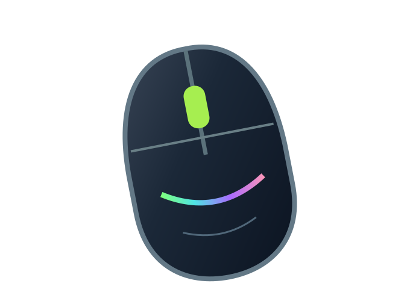

Início / Fichas técnicas / Mouse Gamer Vector 12000 DPI

Periféricos · Mouses
Mouse Gamer Vector 12000 DPI
Mouse ergonômico, com botões laterais e controle de sensibilidade.
R$ 149,90 Preço fictício para demonstração
Estoque inicial ilustrativo: 0 unidades. Consulte a API para valores atuais.
Abrir demonstração interativaEspecificações técnicas de exemplo
- Sensor: óptico
- Até 12.000 DPI
- Conexão: USB
- Botões laterais programáveis
Sobre esta loja
A NEXUS Hardware é um projeto acadêmico com HTML, CSS, JavaScript, API PHP e ferramentas MCP para estudo de encontrabilidade. Não realiza vendas, pagamentos ou entregas reais.